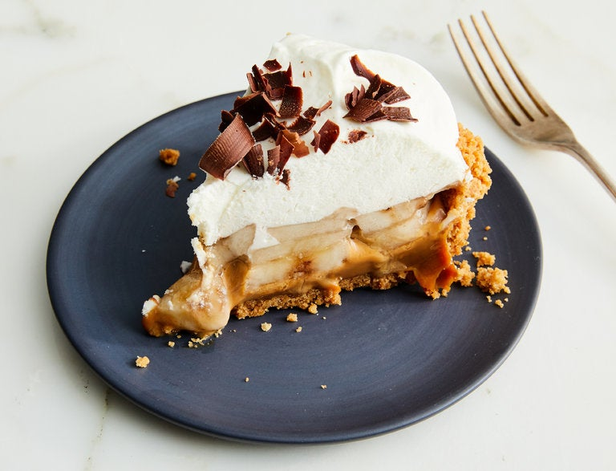

Banoffee Pie

Ryan Liebe for The New York Times. Food stylist: Simon Andrews.
Banoffe pie is a British dessert made from bananas, whipped cream and a caramel sauce,
combined on a biscuit base, made from crumbled biscuits and butter. Its name is a combination
of the word "banana" and "toffe".
The credit for the pie's invention is claimed by Nigel Mackenzie and Ian Dowding, the owner and chef,
respectively, of the - now closed - Hungry Monk Restaurant in Jevington, East Sussex, England.
Ingredients
Filling and crust
- 1¼ cups of graham cracker crumbs (about 10 whole graham crackers)
- 5 tablespoons of unsalted butter, melted
- ⅓ cup of granulated sugar
- ½ teaspoon of salt
- 2½ cups of dulce de leche
- 3 large bananas, peeled and sliced
Whipped Cream
- 1½ cups of cold heavy cream
- 2 of tablespoons of granulated sugar
- 1 of teaspoon vanilla extract
- 1 teaspoon of instant coffee granules
- Chocolate shavings or fresh coffee grounds, for garnish
Preparation
-
Heat the oven to 180 degrees. Make the crust: In a medium bowl, combine graham cracker crumbs,
melted butter, sugar and salt. Stir until fully incorporated and sandy. Transfer to a 15 centimeters
pie plate. Using your fingers or a flat-bottomed cup, press the mixture into the pie plate and up the sides.
Make sure it is well packed. Bake until set, 12 to 15 minutes. Let cool at room temperature for 30 minutes,
or cover with plastic wrap and refrigerate up to 2 days.
-
Spoon the dulce de leche into the pie crust and spread into an even layer. Pile in banana slices into a relatively
even layer (they should overlap). Transfer the pie to the refrigerator while you make the whipped cream.
-
Make the whipped cream: Using a handheld mixer or stand mixer fitted with a whisk attachment, whip the heavy
cream, sugar, vanilla extract and instant coffee, if using, on medium-high speed until firm peaks form, 1 to 2
minutes.
-
To serve, sprinkle the pie with chocolate shavings or fresh coffee grounds, if desired. Store leftover pie in the
refrigerator, covered, for up to 5 days. The whipped cream may lose some height, but the pie will be no less delicious.
Homepage